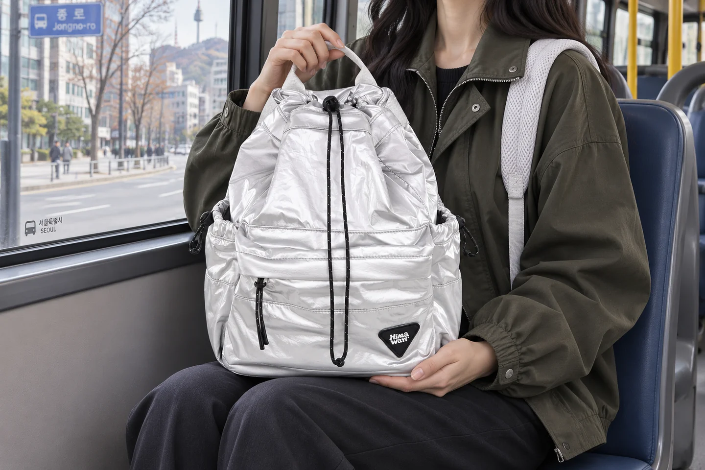
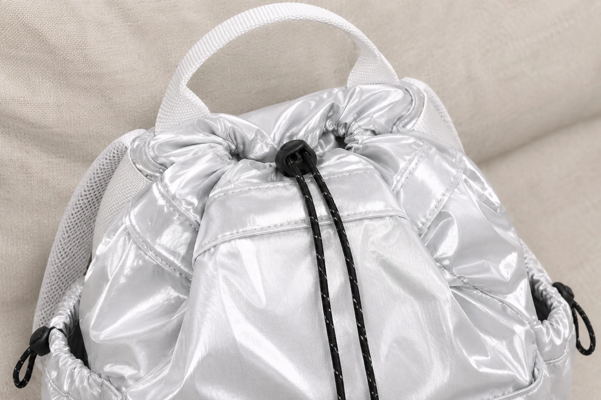
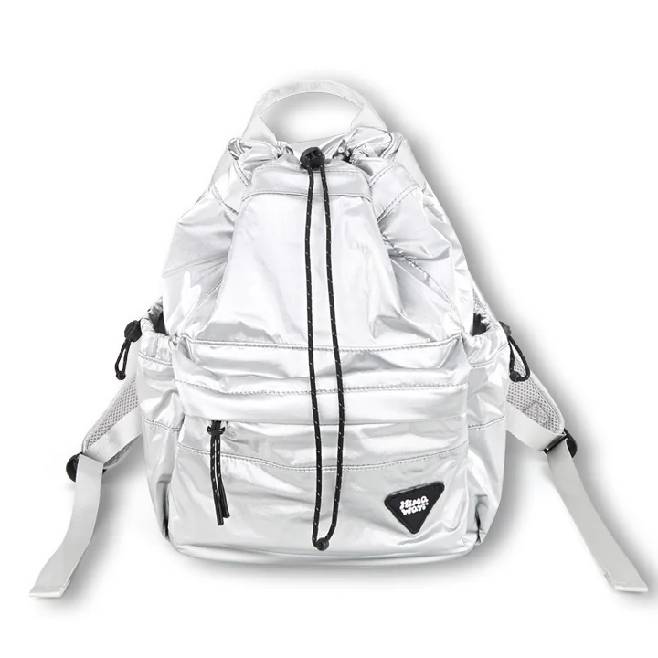

버스에서 스트링 백팩을 무릎에 두면 긴 조임끈은 어디에 둘까

버스에서 등에 멨던 가방을 벗어 무릎에 올립니다. 손잡이는 바로 보이지만 앞에 늘어진 조임끈은 가방 아래로 내려가 손에 닿지 않습니다. No.0514Mini 화이트미니의 실제 사진에서도 윗부분의 작은 조절구 아래로 검은 끈 두 줄이 길게 이어집니다. 벗거나 들 때 잡는 흰 손잡이와 입구를 여미는 검은 끈은 별개입니다. 짧은 탑승이라면 좌석에서 가방을 열 일이 없어도, 앉는 순간과 자리에서 일어나는 순간에 이 끈이 어디 있는지 보면 동작이 편해집니다.
앉기 전에 손잡이와 조임끈을 갈라 잡습니다
좌석 앞으로 가방을 가져올 때 어깨끈을 벗긴 손으로 위 손잡이를 잡습니다. 길게 내려온 검은 끈은 손잡이가 잡힌 다음에 확인합니다. 가방을 몸 앞에서 들면 끈의 아래가 가방 앞판을 따라 놓였는지, 옷자락 사이에 들어갔는지 위에서 볼 수 있습니다. 끈을 손에 둘러 가방을 들어 올리면 입구 쪽으로 힘이 먼저 갈 수 있습니다. 끈을 정리하고 싶다면 가방 무게는 손잡이에 맡기고 앞판에 닿는 끈만 가볍게 받칩니다.
좌석으로 몸을 돌릴 때는 가방 앞판이 통로에 튀어나오는지 살펴봅니다. 좁은 좌석에서는 앞에 앉은 사람의 등받이에 가방을 들이밀면서 돌아야 할 수 있습니다. 그때 검은 끈을 몸판의 아래에서 같이 잡아 주면 가방을 내려놓기 전 끝이 어디 있는지 볼 수 있습니다. 좌석 아래로 가방을 먼저 떨어뜨리거나 발 사이에 끈을 끼워 고정할 이유는 없습니다. 한 번 자세를 바꾸더라도 가방을 두 다리 위에 올리고 손이 닿는 자리에 끈을 두는 편이 다음 동작에 도움이 됩니다.

무릎 위에서는 끈이 바깥으로 떨어지는 방향을 봅니다
가방을 세우면 아래로 늘어진 끈이 앞판을 따라 무릎 가까이에 닿습니다. 가방을 옆으로 눕히면 끈도 어느 한쪽 팔이나 좌석 가장자리로 흘러갈 수 있습니다. 앉은 상태에서 가방의 폭보다 무릎 사이가 좁다면, 가방을 옆으로 눕혀 몸판이 안정적으로 받쳐지는지 살펴봅니다. 끈을 당겨 짧게 보이도록 바꾸기 전에 가방을 몸 쪽으로 조금 돌립니다. 손이 닿는 면에 끈을 얹어두면 옆 사람이 움직이거나 순간적으로 가방을 받쳐야 할 때도 어디 있는지 파악하기 좋습니다.
앞포켓 지퍼를 열어 작은 물건을 꺼낼 때는 가로로 가는 지퍼 손잡이의 길과 검은 조임끈이 겹치지 않는지도 확인합니다. 두 부품이 가깝게 보이면 포켓을 열려는 손으로 조임끈을 잡을 수 있습니다. 조임끈을 옆으로 받친 채 앞포켓 지퍼를 천천히 엽니다. 물건을 꺼낸 직후에는 끈이 처음 자리에 그대로 있다고 짐작하지 말고 앞판에 걸쳐 있는지만 확인합니다. 가방에 무엇을 더 넣으려고 긴 조임끈을 몸 아래로 보내둘 필요는 없습니다.
내릴 정류장이 가까우면 가방을 먼저 세웁니다
내리려고 한쪽 발을 통로로 돌린 뒤 가방을 들면 그동안 끈이 놓였던 자리가 가려집니다. 벨을 누르고 일어날 준비가 되면 가방을 들어 올리기 전에 무릎에서 한 번 세워봅니다. 좌석 틈이나 코트 끝에 걸린 게 있으면 이때 끈 끝을 눈으로 찾을 수 있습니다. 몸을 일으키다가 가방이 당겨지면 힘을 더 주지 말고 받치던 곳으로 조금 낮춥니다. 가방을 내려놓지 못하는 상황이라면 손잡이를 잡은 손을 가까이 두고 다른 손으로 걸린 자리를 확인할 수 있을 만큼만 옮깁니다.
통로에서 다시 멜 때는 먼저 어깨끈이 놓인 등판을 몸 쪽으로 돌립니다. 가방 입구의 검은 끈은 앞판에 둡니다. 위쪽의 흰 손잡이와 검은 조임끈을 한꺼번에 쥐면 어느 쪽에 힘을 주는지 느끼기 어렵습니다. 좌석에 두고 확인했던 순서대로 손잡이로 들어 올리고 끈이 어디에 놓였는지 보고 멥니다. 버스가 움직일 때 가방을 다시 메기 어렵다면 잠시 손으로 들고 내려도 됩니다. 하차 동선에서 가방을 크게 흔들어 끈을 정리할 필요는 없습니다.
좌석에서 서둘러 일어났다가 다시 앉을 때도 손잡이로 가방을 낮춥니다. 잠깐 걸터앉거나 옆자리에 길을 내어 주면 무릎 위에서 가방이 누웠던 방향이 바뀝니다. 그때 끈이 가방 밑으로 들어가면 손잡이를 들 때 같이 당겨질 수 있어요. 무릎 위에 가방을 내려놓을 자리가 좁다면 한 손으로 몸판을 받치고 검은 끈을 앞판에 한 번 모아 봅니다. 손을 바꿔 잡아도 끈을 가방을 드는 손에 감을 필요는 없습니다.

손에 들고 자주 타는 가방을 고를 때
No.0514Mini의 외부 크기는 27 × 36 × 14 cm입니다. 상품 사진에서는 길게 내려오는 검은 끈과 밝은 몸판의 대비가 잘 보이지만 그 끈의 실제 길이나 가방을 채웠을 때 남는 길이는 안내 치수로 알 수 없습니다. 조임끈이 긴 제품을 자주 들고 대중교통을 탄다면 가방을 반쯤 채운 모양에서 무릎에 한 번 대보세요. 가방의 높이가 낮아도 조임끈이 앞판 아래쪽까지 내려올 수 있습니다. 손잡이로 든 상태에서 끈 아래를 어디에 받칠지 미리 보면 별도 고정끈을 사야 할지 바로 정할 필요는 없습니다.
좌석에서 제일 먼저 보는 것은 가방을 펼칠 공간보다 자신이 무릎 위에서 가방을 돌릴 범위입니다. 손잡이, 조임끈, 앞포켓 지퍼가 각각 어느 자리에 있는지 익혀 두세요. 지퍼를 여는 손이 끈부터 밀어내야 한다면 가방 앞판을 조금 자기 쪽으로 돌리거나 다른 손으로 끈을 받쳐봅니다. 다음 정류장에서 가방을 들 때 끈이 무릎 가장자리 아래에 남는 날도 있을 겁니다. 가방을 들기 전에 손잡이와 끈을 따로 보면 서둘러 몸을 일으킬 때 어느 쪽을 먼저 챙길지 금방 알 수 있습니다.